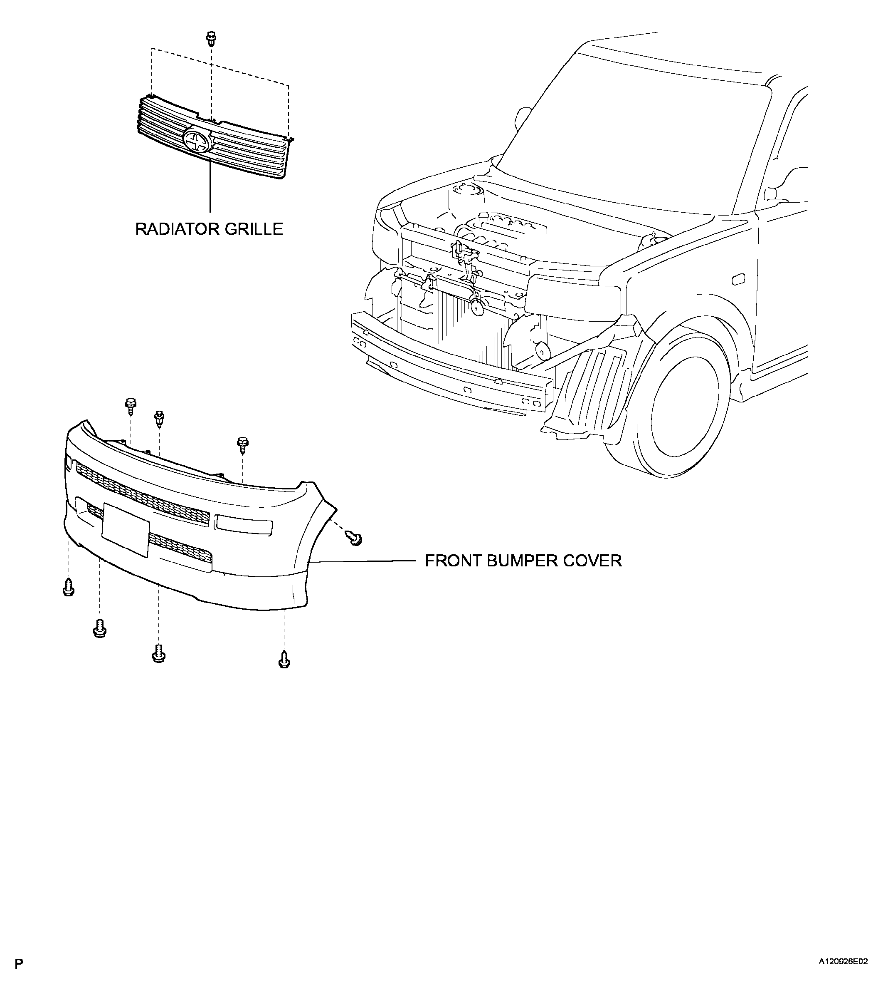
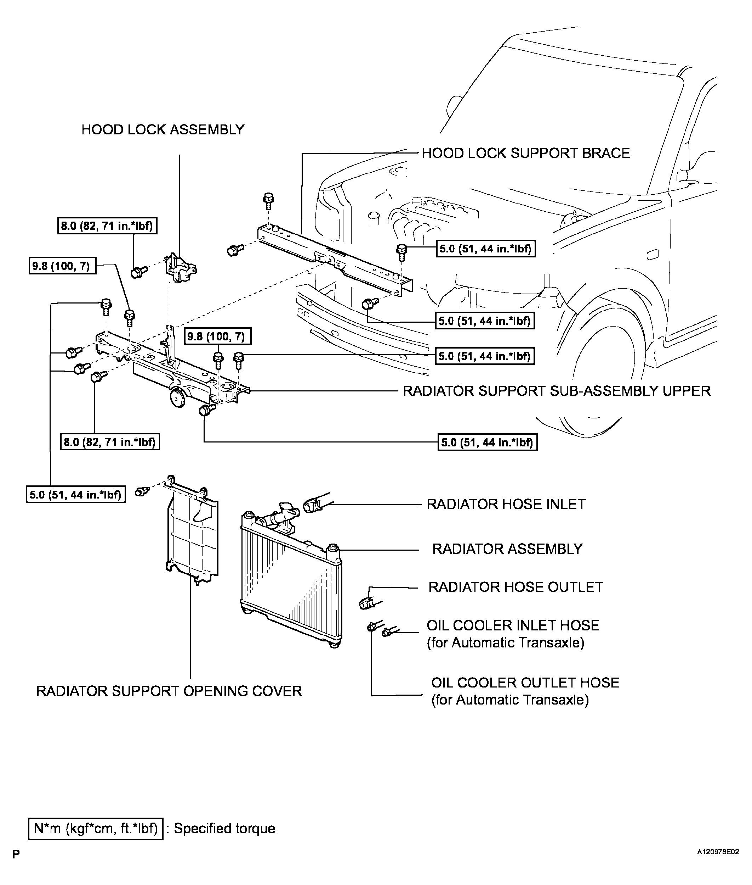

Cooling (1NZ-FE): Radiator: Components
Fig 1: Identifying Radiator Components (1 Of 2)

Courtesy of © TOYOTA, LICENSE AGREEMENT TMS1002
Fig 2: Identifying Radiator Components (2 Of 2)

Courtesy of © TOYOTA, LICENSE AGREEMENT TMS1002